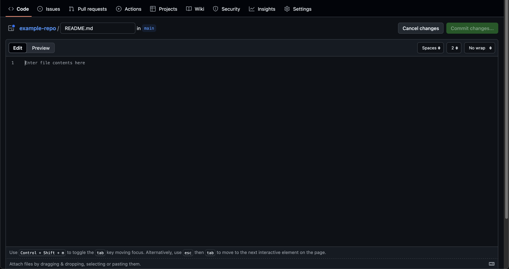

1.3 - GitHub
GitHub is closely intertwined with git, but they are not the same thing.
git is the actual version control system that tracks the state of the
project over time. GitHub is a website that can be used as a remote storage
location for git repositories. Think of this as Google Drive, but only for
git repositories.
GitHub allows you to view the commit history for a repository, or download and upload changes to a repository. You can share code with others with public repositories, or you can limit access to who can see your code with private ones.
The following features are tools that are exclusive to GitHub, and aren’t
actually a part of the git tool.
Issues
Let’s say we’re aware of a bug in the team’s code that causes some unexpected behavior to occur. There are a few ways that we could try and let the rest of the team know about the problem.
We could send a message to the team through communication channels like Slack or GroupMe, but it would be a lot nicer if we could create more of a tie between the problem report and the actual repository.
This is where issues come in. We can open an issue on GitHub that is basically a problem report. It’s a written description of the problem that is visible on GitHub along with the code. It’s not a part of the code in the repository, but it’s available to read on GitHub with the repository.
Pull Requests
Let’s say that we want to merge in some commits from our branch feature
into the main branch. Instead of merging those branches directly, it’s
often better practice to use a pull request.
Pull requests are basically a proposed merge between two branches. They let us indicate that we have changes that we want to merge, but we allow other developers to look over what we’ve changes to make sure everything’s okay.
To learn more about pull requests, the GitHub docs already do a great job. Read this page to learn how to create a pull request.
Note
Another reason to use pull requests may be that you aren’t allowed
to commit directly to main. This is because the main branch always
has to have code that is verified to work successfully, and it’s not a good idea
to just push whatever changes we want onto main.
If a repository is configured properly, only a few people (admins and owner) have the ability to approve the pull requests that cause code to be combined into main.
VS Code Integration
We’re going to continue our example project from 1.2 - What is git?, but if that’s not an option, this is what we need:
Git repo initialized
mainbranch configuredCommit(s) on
main.
Important
See Getting Started to ensure you’re set up with a GitHub account.
Create repository on GitHub
To begin, we need a GitHub repository. Go to the home screen and make sure you’re signed in. Then, select New in
the top left of the screen.
We need a repository name, so let’s do example-repo. We also can enter a description:
You can make the repository either public or private - it doesn’t really matter.
Don’t add a README, .gitignore, nor a license.
What’s a README and .gitignore?
A README (often README.md) is a file that is basically the “about
this project” file. It should offer a description of the the project and fun
information.
A .gitignore is another important file that tells git to completely
ignore some files. In VS Code, we’d see this as them not showing up in
Source Control even if they have changes present.
Press Create repository to create it.
Link GitHub repository in VS Code
To connect the GitHub repository to the one we’ve setup in VS Code, we need to give VS code the link that GitHub gave us.
In VS Code’s Source Control panel, select the three dots next to Source
Control, then Remote > Add Remote.

Select Add remote from GitHub and then proceed with the on-screen
instructions to connect your GitHub account to your VS Code account.
Note
If you’re working on a team laptop and you don’t get the option to sign in to GitHub, that just means you’re already signed in through somebody else’s account. Let a mentor or lead know and get that sorted out. Typically this involves using the Windows Credential Manager and removing any github-related credentials under “Windows Keys”.
Once signed in through GitHub, we can search through all our repositories. Search for the one we just created, and select it.
When you’re asked for a name, it’s convention to put the name as origin.
This is the name that git calls the remote repository.
Push local commits
To send a copy of all of your changes that you’ve made to the remote GitHub
repository, just select the Publish Branch button.
If you navigate back to the website page where you created the repository and reload it, you should see something like this:

I made my repository private, but that doesn’t affect much besides visibility.
Pull remote changes
Sometimes, we want to make changes from a different computer. Let’s simulate that now.
On the website for our project, it asks if we’d like to create a README.
Let’s click that green button and allow it to create a file for us in GitHub (not VS Code).
We should be greeted with a screen like this in GitHub:
Let’s enter the following information:
# Hello, World!
This repository is an example repository to learn how GitHub and `git` work
together.
What’s .md?
.md is a file extension that is short for Markdown. Markdown is a
powerful but simple language to write text files. Putting # before a
line means that line is a title, and wrapping a word or phrase in
backslaches (`like this`) means it should be formatted like code.
There’s a lot more features of markdown, though, so feel free to look on the internet for more interesting formatting.
To see what the file renders as, select Preview next to Edit in the upper left.

If we’re happy with the file, click Commit Changes in the top right. This
creates a commit on main with the changes to the file we just made.
You can leave the commit message as Create README.md and omit the extended
description. Make sure to select the option that commits directly to main.
We’ll talk about pull requests later.
Now you’ll see the rendered README when you go to the homepage for the
repository, by clicking on the repository name in the top left.

Our custom README’s contents are rendered right on the homepage for any
viewer of the repository to see.
But we’ve got one issue - head back to VS code and we don’t see a README.md
file or a commit named Create README.md in the commit history.
To get all updates, select the three dots next to Source Control and click
Pull. This is a necessary step that downloads and applies any changes that
the local repository doesn’t have.
Now, we can see the commit Create README.md in the commit history, and we
can see the file in the Explorer.
Important
Bad things can happen if you don’t run Pull before
committing yourself. Most of the time, git is powerful enough to know
what to do automatically, but it can lead to bad stuff happening if you
don’t write code on the latest version of the codebase. Always pull before
you start coding.